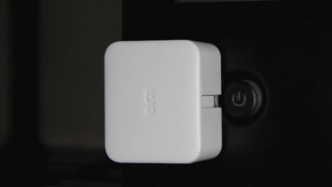

Bluetooth LE
ITP | Week 7 | March 10, 2017
Don Coleman
adafru.it/3400
Beacon Project
Course Evaluations
https://goo.gl/NQ2w2ZReverse Engineering
SwitchBot
switch-bot.com
Scan for FEE7
Use service cba20d00-224d-11e6-9fb8-0002a5d5c51b
Characteristic cba20002-224d-11e6-9fb8-0002a5d5c51b
Write 0x5701 to activate switchbot
Live Sniffing
- Requires Windows
- Bluefruit LE Sniffer (hardware)
- Nordic nRF-Sniffer (software)
- Wireshark-win64-1.12.13.exe (a really old version)
- Adafruit Tutorial
Bluefruit LE Sniffer
Bluetooth HID
org.bluetooth.service.human_interface_device.xmlMouse
#include <BLEHIDPeripheral.h>
#include <BLEMouse.h>
BLEHIDPeripheral bleHIDPeripheral;
BLEMouse bleMouse;
bleHIDPeripheral.addHID(bleMouse);
Mouse
bleMouse.move(x, y);
bleMouse.click();
bleMouse.press();
bleMouse.release();

Keyboard
#include <BLEHIDPeripheral.h>
#include <BLEKeyboard.h>
BLEHIDPeripheral bleHIDPeripheral;
BLEKeyboard bleKeyboard;
bleHIDPeripheral.addHID(bleKeyboard);
Keyboard
bleKeyboard.write(char);
bleKeyboard.press(key);
bleKeyboard.release(key);
bleKeyboard.releaseAll();
Mulitmedia
#include <BLEHIDPeripheral.h>
#include <BLEMultimedia.h>
BLEHIDPeripheral bleHIDPeripheral;
bleHIDPeripheral.addHID(bleMultimedia);
Mulitmedia
bleMultimedia.write(MMKEY_VOL_UP);
bleMultimedia.write(MMKEY_VOL_DOWN);
bleMultimedia.write(MMKEY_MUTE);
Unpair
// Hold down button on start to unpair
if (buttonState == LOW) {
Serial.println("clearing bond data");
bleHIDPeripheral.clearBondStoreData();
}
Bluetooth MIDI
MIDI
MIDI is a music protocol that sends description of the notes rather than actual music.
https://midi.org/MIDI Service
03b80e5a-ede8-4b33-a751-6ce34ec4c700
MIDI Data I/O Characteristic
7772e5db-3868-4112-a1a9-f2669d106bf3
read, writeWithoutResponse, notify
BLEPeripheral blePeripheral;
BLEService midiService(
"03B80E5A-EDE8-4B33-A751-6CE34EC4C700");
BLECharacteristic midiChar(
"7772E5DB-3868-4112-A1A9-F2669D106BF3",
BLEWrite | BLEWriteWithoutResponse | BLENotify | BLERead,
5);
uint8_t channel = 10;
uint8_t note = 38; // snare drum
uint8_t velocity = 127;
uint8_t data[] = { 0x80, 0x80,
0x90 + channel, note, velocity
};
midiChar.setValue(data, sizeof(data));
Bonding
Security
Bluetooth Gateways
Bluetooth Mesh
Review
Peripherals
- Peripheral provides services
- Services are collections of characteristics
- Characteristics
- read data
- write data
- notify when data changes
Central
- Scans to discover peripheral
- Connects to peripheral
- Discovers services and characteristics
- Read data from characteristics
- Write data to characteristics
- Subscribe to be notified when values changes
Service & Characteristics live on the Peripheral.
The Central device remotely accesses the Characteristics on the Peripheral using Bluetooth Low Energy.
Don Coleman
dc159@nyu.edu

NYU ITP Bluetooth Spring 2017 Week 7 by Don Coleman is licensed under a Creative Commons Attribution 4.0 International License.